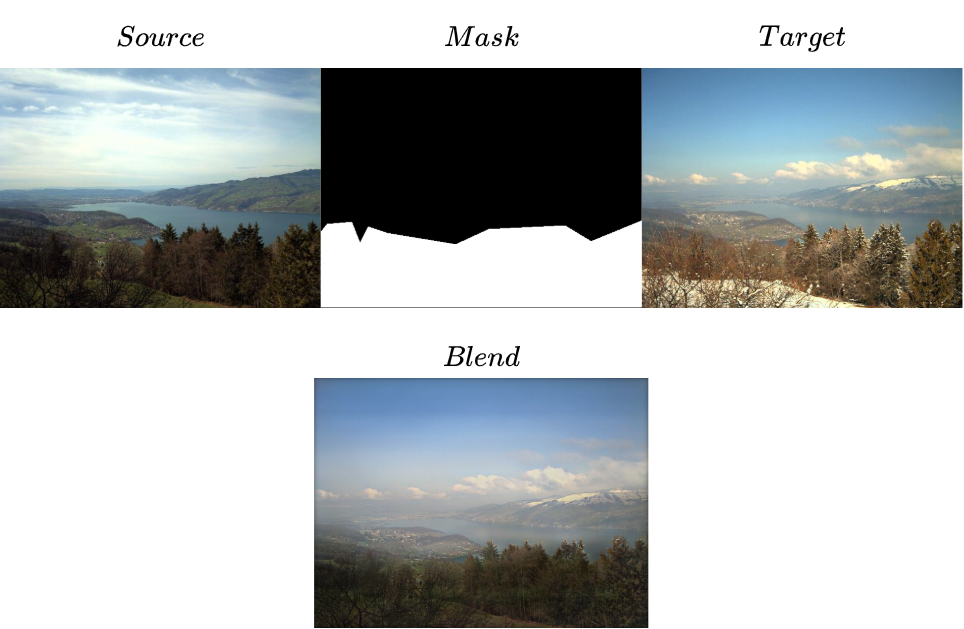
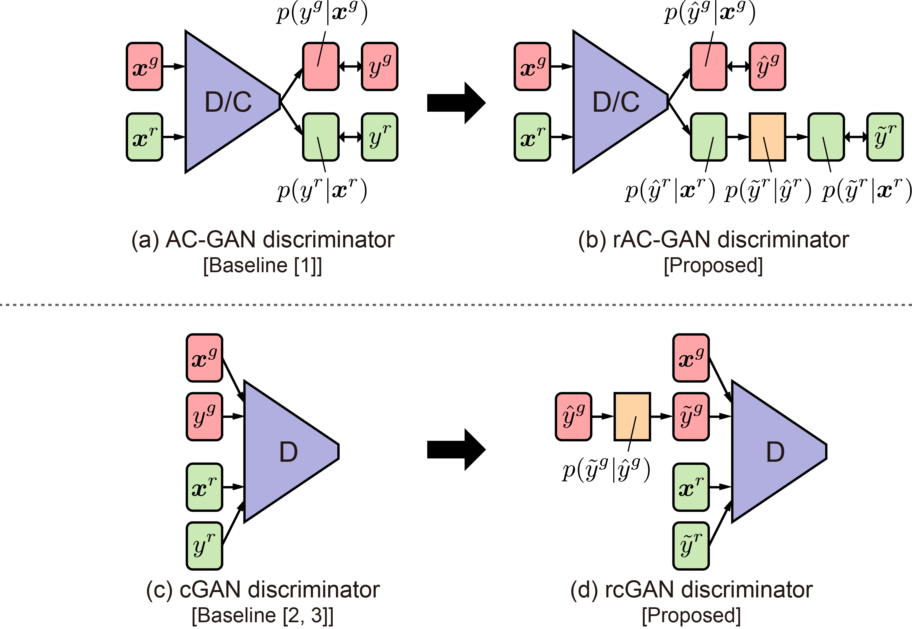
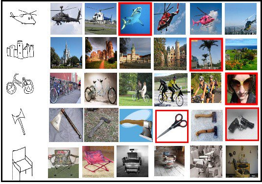
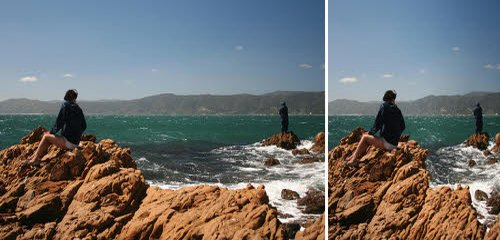
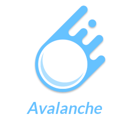

I am a research assistant at the Machine Learning and Vision Group at IIT Hyderabad supervised by Prof. Vineeth N Balasubramanian. I am also an undergraduate student at PSG Tech.
I work on developing algorithms that
improve the learning efficiency and adaptiveness of machine learning systems. My current research interests are in
transfer learning,
particularly in meta-learning, multi-task learning,
continual learning and out-of-distribution generalization.
I believe that reproducibility is the bedrock on which science rests,
and have also directed my efforts towards ensuring and promoting reproducibility in ML.
I also take avid interest in participating in hackathons and contributing to
open-source software.
Apart from research in ML, I am equally interested in working on problems and challenges
in ML engineering and deployment.

Selected by Weights & Biases
and DAGsHub for $500 grants each!
Spotlight at the W&B Fully Connected
Blog!
|

Gaussian-Poisson GANs for Image BlendingCombined classic computer vision algorithms with GANs for seamless cloning of images Code |

Noise Robust C-GANs for Source-Free Unsupervised Domain AdaptationApplied a noise robust conditional GAN trained on the source data to pseudo-label the target data, and in-turn conditionally sample from the C-GAN to train and improve the classifier on the target domain, demonstrating competitive performance in UDA. |
|
|

Zero Shot Sketch-Based Image RetrievalUsed a deep triplet network along with a domain disentanglement strategy that mines information mutual to images and sketches Code |

Content-aware Image ResizingApplied a dynamic programming algorithm to resize an image by removing connected pixels with low energy, minimizing the visual artifacts that are present in traditional resizing methods Code |

|
| Fall 2021 | Deep Learning for Computer Vision, NPTEL (Online Course) | Instructor: Vineeth N Balasubramanian | Taken By: 6426 students |